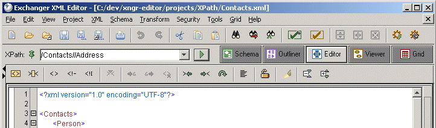

)and a number of results will be listed in the XPath Results tab in the Messages window at the bottom of the application.
)and a number of results will be listed in the XPath Results tab in the Messages window at the bottom of the application.
Ease of browsing and navigation is significantly improved through the use of XPath searches. To perform a sample XPath search, open the document (Contacts.xml) in the XPath project, choose the Editor view and in the XPath: text field (at the upper left of the application) enter the text /Contacts//Address.
Figure 1. XPath Search
Press Enter or the Execute button ()and a number of results will be listed in the XPath Results tab in the Messages window at the bottom of the application.

Figure 2. XPath Results
Click on a result in the XPath Results tab in the Messages window and the Editor will scroll to the appropriate location in the file and highlight the element.

Figure 3. XPath Result
(Note: XPath queries can be executed in either the Editor or Viewer).
It is possible to query for objects other than elements using the XPath functionality. Enter the query /Contacts//Address/@type and the two appropriate attributes will be returned as the result of the query. Again, click on a result and the corresponding content will be highlighted in the Editor.
The XPath displayed in the text field changes automatically, by default, as you move the cursor position in a file. To alter this behaviour and to maintain a particular path in the field for repeated use, click on the pin icon to the left of the field. To acccess previously used XPath queries, click on the down arrow to the right of the text field.
The style of the XPath displayed in the text field can also be controlled. In File->Preferences (Views Tab) select Generate unique XPath in the XPath Editor section to see fully qualified paths of the form /Contacts/Person[1]/Address[1]/City rather than less specific ones such as /Contacts/Person/Address/City.
There is no built-in support for namespaces in XPath 1.0 - open the document ContactsNS.xml in the XPath project and try the same query (/Contacts//Address). No results are returned because the http://www.somewhere.com/Address/ namespace is used on the Address elements in this example. It might be expected that changing the query to /Contacts//addr:Address would result in the expected results but again this proves not to be the case. The reason why this does not work is that the XPath processor has no built-in knowledge of the prefix. One way to get around this is to use the general query /*[local-name()='Contacts']//*[local-name()='Address'] but this will return Address elements in any namespace, which may not be what you want.
To specifically query for Address elements in the http://www.somewhere.com/Address/ namespace, you must tell the XPath processor how to associate a prefix with a namespace and then use that prefix in your query. In Exchanger you can do this using the XML tab in the File->Preferences dialog. In the Namespace Prefix Mappings section of the dialog, press Add and enter the Prefix as ad and the URI as http://www.somewhere.com/Address/. Notice how you can use a prefix that is different to the one used in the actual document content if you like. Now enter the query as /Contacts//ad:Address and the two Address elements in that namespace will be returned in the results.

Figure 4. XPath Result